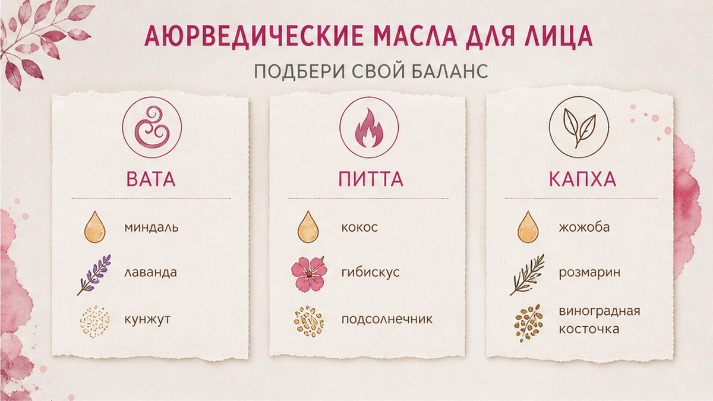
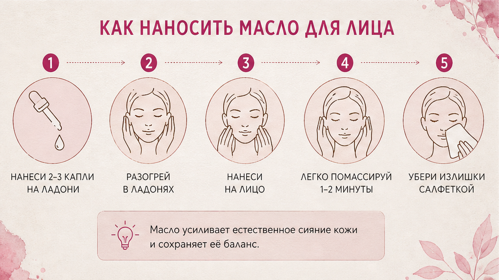
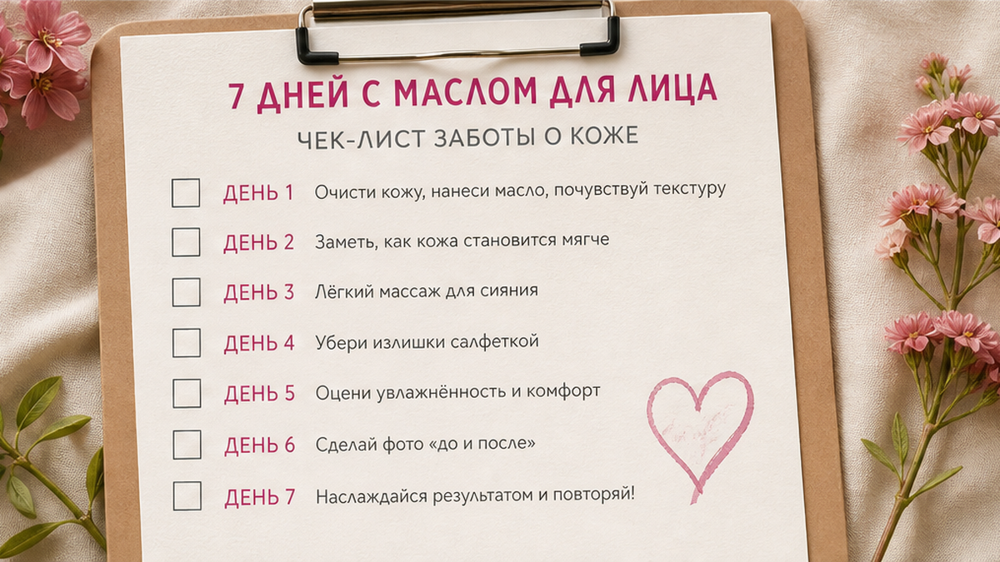

Как выбрать масло для лица по типу кожи, чтобы кунжут, гхи и алоэ вера работали, а не оставляли комедоны. Сначала смотрим, какая кожа "сейчас" - сухая (Вата), горячая с покраснением (Пита) или жирная с блеском (Капха). Потом берём одно базовое средство, делаем патч-тест 48 часов и только после этого собираем лёгкую смесь на вечер. Ниже - таблица выбора, три рецепта и чеклист на 7 дней без "масляного блина".
Масла для лица в аюрведе - не "чем жирнее, тем лучше". Кунжутное масло для лица подходит сухой коже, гхи лучше разбавлять гелем алоэ, а при покраснениях чаще нужен гель алоэ вера, а не "масло алоэ" из магазина.
Ниже - как выбрать масло для лица без забитых пор: три продукта из кухни и аптеки, таблица по типу кожи, тест на комедогенность и рецепты смесей за 2 минуты для женщин 35-65.
"Елена, я намазала кунжутом всё лицо - к утру как после жарки".
Слышу это часто.
Женщина купила "правильное" масло.
Прочитала, что оно "питает и омолаживает".
Намазала толстым слоем.
А кожа ответила порами.
Не потому что масло "плохое".
Потому что база не совпала с тем, что у кожи сейчас.
Комедогенность - это склонность средства закрывать поры, как плотная крышка на банке. Шкала обычно от 0 до 5: чем выше, тем осторожнее на жирной и комбинированной коже.
Смотри.
Сначала тип кожи. Потом продукт. Потом капли, не ложки.
После 40 кожа меняется быстрее: то сухая щека, то блестящий лоб в одной неделе. Поэтому "любимое масло подруги" - плохой ориентир.
На кухне и в аптеке одно слово "масло" значит разное.
Пищевое. Кунжутное холодного отжима и топлёное масло гхи - если без ароматизаторов и "жареного" запаха. Их можно пробовать на лице точечно, после теста.
"Масло алоэ". Чистого масла алоэ не существует. В баночке обычно экстракт алоэ на кокосе, оливе или миндале. Для покраснений это часто тяжёлая база.
Гель алоэ вера. 99%+ без спирта и отдушек. Быстро впитывается, почти без блеска. Для Питы и смешанной кожи это частая база.
❌ Что обычно покупают "на удачу":
✅ Что брать в дом для старта:
Если не хотите мешать сами - достаточно готового крема под запрос кожи, например из линейки Silver Cream. Масла тогда остаются точечно, не как основной слой.
💡 Слово на этикетке "масло" не равно "можно на всё лицо каждый вечер". Смотрите базу и реакцию вашей кожи.
Доша - это "режим" кожи и тела сейчас, не паспорт на всю жизнь.
Вата - сухость, стянутость, шелушение, тонкая кожа.
Пита - жар, краснота, чувствительность, иногда жжение.
Капха - жирный блеск, плотность, поры, "плёнка" к обеду.
Сомневаетесь - пройдите диагностику кожи или разберите признаки в материале Вата, Пита или Капха.
Давай покажу таблицу "что брать сейчас".
| Кожа сейчас | База | Как наносить | Не делать |
|---|---|---|---|
| Вата (сухость) | Тёплый кунжут 1-3 капли или гхи + гель алоэ | На влажную кожу, похлопыванием | Смывать спиртовым тоником сразу после |
| Пита (жар, краснота) | Гель алоэ вера + 1-3 капли жожоба | Тонкий слой, без трения | Горячий кунжут и толстый слой гхи |
| Капха (жир, поры) | Жожоба; кунжут/гхи только на сухие зоны | Капли, не маска; Т-зону не заливать | Кунжут или гхи на всё лицо на ночь |
Кунжутное масло для лица. Средняя комедогенность около 3. Хорошо питает сухую кожу. На жирной - только точечно и после теста.
Масло гхи для лица. Глубоко питает, но для тонкой европейской кожи часто тяжеловато в чистом виде. Разбавляйте гелем алоэ.
Алоэ вера для лица. Гель - увлажнение и "охлаждение" без жирного блеска. Это не то же самое, что масляный экстракт алоэ.
Сделайте: выберите одну строку таблицы на эту неделю. Не делайте: смешивать все три масла "на всякий случай".
Именно этот момент обычно упускают.
Покупают масло. Сразу на всё лицо. Потом неделю ругают "аюрведу".
Патч-тест - маленький пробник на коже, чтобы увидеть реакцию до полного ухода.
| Время | Что делать | Зачем |
|---|---|---|
| Вечер 1, 0 мин | Умыть зону линии челюсти, обсушить | Чистая кожа без крема |
| Вечер 1, 1 мин | 1-2 капли чистого продукта на 1 см кожи | Не смешивать с другими средствами |
| Утро 2 | Посмотреть: зуд, краснота, новые комедоны | Ранняя реакция |
| Вечер 2 | Повторить те же 1-2 капли на то же место | Проверить отсроченный ответ |
| Утро 3 (48 ч) | Решение: база ок / только смесь / отказ | Не тащить "тяжёлое" на всё лицо |
Ок. Нет зуда, нет новых точек - можно вводить в вечерний уход.
Сомнение. Лёгкая плёнка без воспаления - разбавляйте алоэ, уменьшайте капли.
Стоп. Комедоны, зуд, жжение - уберите продукт. Не "пересиживайте".
Хотя нет... точнее будет сказать: один прыщик на линии роста волос после стресса - не приговор. Смотрите картину за двое суток и зону теста.
Миниплан перед смесью.
День 0: выбрать одну базу (кунжут, гхи или алоэ-гель).
48 часов: только патч-тест, без масок на всё лицо.
День 3: если ок - тонкий слой вечером на половину лица или сухие зоны.
Фото: день 0 и день 7 в одном свете, без фильтров.

Смесь - не "домашний завод". Это 3-5 дней пробника в чистой ложке или баночке.
Готовьте столько, сколько съедите за эти дни. Остаток в холодильнике не храните неделями без ума.
| Тип | Рецепт | Как использовать |
|---|---|---|
| Вата | 1/2 ч.л. гхи + 1 ч.л. гель алоэ | Вечером на влажную кожу, 3-5 капель смеси |
| Пита | 2 ч.л. гель алоэ + 3 капли жожоба | Тонкий слой, можно утром на Т-зону не трогать |
| Капха | 1 ч.л. жожоба + 2 капли масла нима (если есть воспаления) | Только вечер, излишки снять салфеткой |
Нет жожоба и нима - для Капхи начните с чистого геля алоэ. Кунжут оставьте на щёки, если они сухие, а Т-зона блестит.
Раз в неделю для Ваты можно маску: 3-4 капли тёплого кунжутного масла на 10 минут, затем салфетка. Не на ночь "как одеяло".
Смотри.
Смесь работает, когда пальцы чуть влажные от продукта, а не скользят как после оливья.
Сделайте: один рецепт под вашу строку из таблицы. Не делайте: добавлять эфирные масла "для красоты" в первую неделю.

Техника важнее бренда бутылки.
Масло - скольжение для мягкого массажа и защита барьера. Барьер кожи - как тонкая плёнка-забор: не даёт влаге убегать и раздражителям заходить слишком легко.
| Время | Что делать | Зачем |
|---|---|---|
| 0-1 мин | Умыть мягко, оставить кожу чуть влажной | Масло ляжет тоньше |
| 1-2 мин | 3-5 капель смеси в ладони, согреть | Меньше "холодного жира" |
| 2-8 мин | Похлопывание и лёгкий массаж по линиям лица | Питание + скольжение без растягивания |
| 8-12 мин | Давление 2-3 из 10, без щипков | Не травмировать капилляры |
| Через 15-20 мин | Излишки убрать сухой салфеткой | Меньше риска забить поры на подушке |
Утром после масляного вечера - лёгкий гель или ваш обычный крем. Не второй слой гхи.
Если делаете фейс-практику, масло - только помощник скольжения. Привычки мимики и зажимы лица разбирали отдельно: как следить за мимикой дома.
Сделайте: засеките 15 минут и снимите блеск. Не делайте: спать в "масляной маске", если утром поры в точках.
Капли на влажную кожу работают мягче, чем ложка на сухое лицо. Поры любят тонкий слой и паузу перед подушкой.

Неделя - чтобы увидеть реакцию, а не "мгновенное омоложение".
Вечерний масляный уход - 4-5 раз за 7 дней. Не обязательно каждый день подряд.
Если к дню 7 блеск сильнее, а поры плотнее - уменьшите кунжут и гхи. Усильте алоэ-гель и снятие излишков.
Если сухость ушла, а воспалений нет - вы на своей строке таблицы.
Не оценивайте лицо каждый час в зеркале подъезда.
Один свет, одно расстояние, два фото - день 1 и день 7.
Так честнее, чем настроение после бессонной ночи.
Ошибки повторяются у разных женщин почти одинаково.
| Ошибка | Что происходит | Как исправить |
|---|---|---|
| Кокос на жирную кожу | Выше риск комедонов | Жожоба или гель алоэ |
| Толстый слой гхи на ночь | Плёнка, утренние точки | Разбавить алоэ, снять излишки |
| "Масло алоэ" при красноте | Жар + тяжёлая база | Чистый гель алоэ вера |
| Кунжут на Т-зону Капхи | Блеск и забитые поры | Только сухие щёки/контур |
| Новое масло + новый скраб | Непонятно, что раздражает | Один эксперимент за раз |
❌ Стоп-лист на старт:
✅ Рабочий минимум:
На консультациях вижу: "я всё натуральное, а лицо в точках". Открываем банку - гхи слой на слой, без алоэ, без снятия.
Убираем толщину. Добавляем паузу перед сном.
Через 10 дней картина спокойнее.
Не магия.
Дозировка.
Масла для лица по аюрведе работают, когда совпадают с типом кожи сейчас. Не когда банка "правильная" сама по себе.
И последнее: лицо - часть системы. Масло не отменит мимику, сон и сахар. Но правильная база вечером делает массаж мягче, а кожу спокойнее к утру.
Начните с патч-теста и одной строки таблицы.
Остальное нарастите на второй неделе, если захочется.
Берите холодный отжим, без жареного запаха и отдушек. На сухую Вату - 1-3 капли на влажную кожу. На жирную - только точечно после патч-теста 48 часов.
Не чистым толстым слоем. Смешайте 1/2 ч.л. гхи с 1 ч.л. геля алоэ и используйте вечером 4-5 раз в неделю. Излишки снимайте салфеткой через 15-20 минут.
Гель быстро впитывается и почти не даёт блеска - удобен при Пите и смешанной коже. "Масло алоэ" - это экстракт на другой жирной базе; для красноты часто тяжело.
Новые комедоны, плотные точки, зуд в зоне теста за 48 часов. Тогда откат: меньше капель, больше алоэ или смена базы на жожоба.
Если вечером сняли излишки салфеткой - утром достаточно мягкого умывания и лёгкого ухода. Если спали в блеске - умойте тщательнее и на день уберите масляный слой.
Да: Т-зону держите на геле алоэ или жожоба, сухие щёки - кунжут или смесь с гхи точечно. Не один продукт на всё лицо одним жирным слоем.
Достоверность: рекомендации носят оздоровительно-косметический характер и основаны на практике Елены Шимановской и открытых принципах аюрведического ухода. Не заменяют консультацию врача при острых воспалениях, дерматите или акне.
🔥 Мой Telegram-канал «Silver Cream»
❓ Какое масло пробовали на лице - кунжут, гхи или алоэ? Были ли забитые поры после "натурального" ухода? Какой у вас тип кожи сейчас - сухость, жар или блеск? Напишите в комментариях ⤵️